The global energy landscape has entered a period of profound and structural transformation, moving away from a multi-decade era defined by market-driven globalization and toward a fractured system governed by geopolitical alignment and strategic survival. This paradigm shift was catalyzed by the 2022 Russian invasion of Ukraine, which effectively weaponized the continent's reliance on piped natural gas, and has been further accelerated by the catastrophic 2026 Middle East conflict, which placed the world's most critical maritime energy chokepoints under a state of functional blockade.
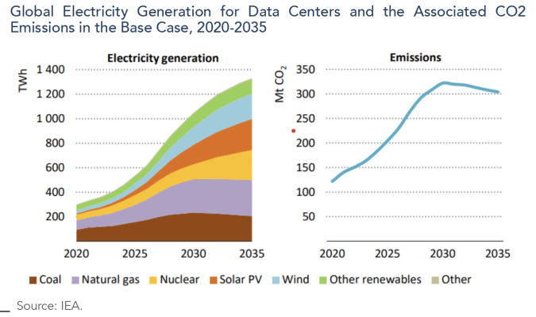
Energy security is no longer perceived as a secondary component of economic policy or an environmental aspiration; it has been elevated to a core pillar of national defense and sovereign autonomy. The intersection of kinetic warfare, economic statecraft, and the race for critical mineral dominance has created a "new geopolitics of energy" where the reliability of supply chains is prioritized over the efficiency of the global marketplace.
The Doctrine of Energy as a Weapon
The foundational shift in modern warfare is the explicit weaponization of energy. Russia's invasion of Ukraine made this unmistakably clear. By systematically targeting Ukraine's power infrastructure, Moscow deployed what military analysts now call the "General Winter" strategy — deliberately destroying energy systems ahead of cold months to sap civilian morale and degrade military capacity.
In 2025 alone, Russia carried out 1,225 attacks on Ukraine's energy infrastructure, a staggering number that exceeded the cumulative total of the war's first three years combined. The damage inflicted surpassed $20 billion, with approximately 50% of Ukraine's total energy infrastructure and production capacity destroyed, including over 67% of its thermal generation capacity. A single coordinated strike on November 8, 2025, deployed 450 exploding bomber drones and 45 missiles against 25 locations simultaneously — illustrating the industrialized scale of modern energy warfare.
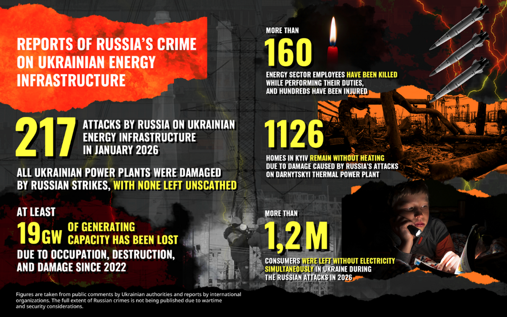
This doctrine extends into the digital domain. Cyberattacks on European energy systems increased by 30–40% since the invasion began, with Russian-linked hacker groups like Sandworm deploying sophisticated malware to disable high-voltage substations. A coordinated cyberattack targeted 22 Danish energy companies simultaneously, while Poland faced a staggering 270,000 cyberattacks in 2025 — a rate 2.5 times greater than the prior year. In December 2025, a coordinated breach hit a combined heat-and-power plant supplying heat to nearly 500,000 customers, alongside multiple wind and solar farms across Poland.
The 2026 Munich Security Report described this as the deliberate blending of cyber and kinetic operations against energy grids — a qualitatively new form of conflict where the boundary between war and peace collapses at the point of the power plant. Energy grids are no longer merely infrastructure. They are the battlefield.
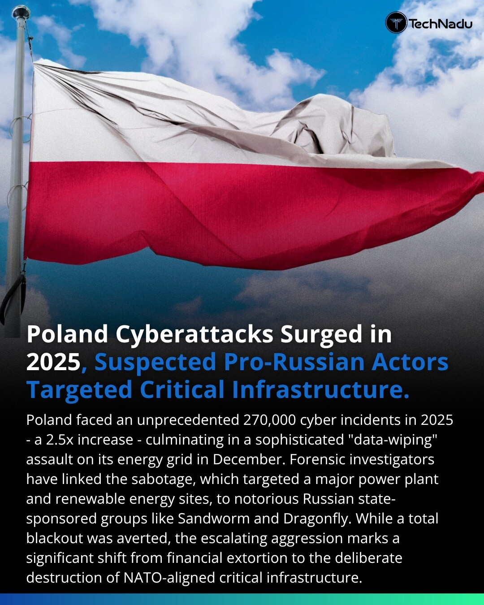
REPowerEU and the Legislative Mandate for Autonomy
Europe's response became a template for conflict-driven energy transition. The REPowerEU Plan, launched in May 2022, sought to rapidly reduce dependence on Russian fossil fuels by diversifying supply, accelerating renewables, and improving energy efficiency. The plan proposed raising the EU's 2030 renewables target from 40% to 45% of final energy consumption. Surveys at the time showed 84% of EU citizens agreed that Russian aggression made it more urgent for member states to invest in renewable energy.
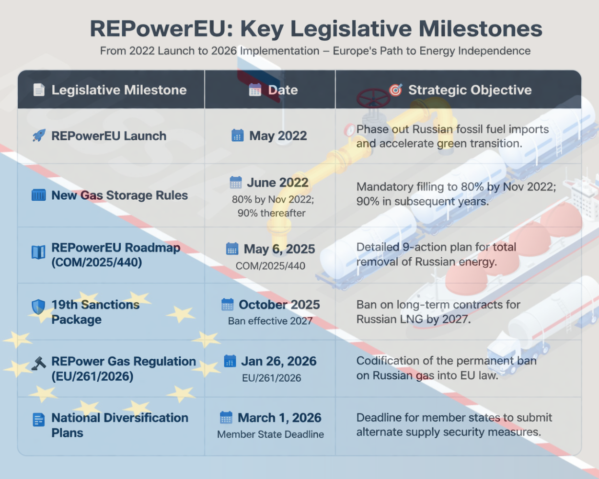
The @REPower Gas Regulation (EU/261/2026), adopted in early 2026, turned the RepowerEU_GR roadmap into binding law, mandating a gradual but permanent ban on Russian natural gas.8 This regulation includes a rigorous "prior authorization" system for gas imports, requiring importers to provide detailed information on the country of production to ensure that Russian gas is not being re-labeled and smuggled into the European market through third parties.8 This legislative architecture demonstrates that energy security in 2026 is governed by monitoring, traceability, and state intervention rather than open-market competition.
The Strait of Hormuz Crisis: The World's Most Dangerous Chokepoint
If the Ukraine war reshaped European energy thinking, the escalating Middle East conflict from 2025 into 2026 struck the entire global system. The conflict involving Iran, Israel, and the United States concentrated the world's attention on a 33-kilometer-wide waterway — the Strait of Hormuz — through which approximately 20 million barrels per day of crude oil and petroleum products transit, representing roughly one-fifth of global petroleum consumption and more than one-quarter of all seaborne oil trade.
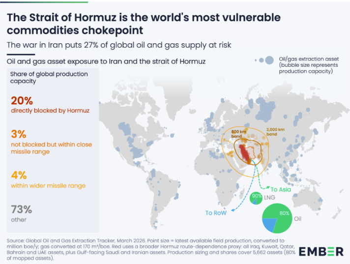
The International Energy Agency (IEA) projected global oil supply would plunge by approximately 8 million barrels per day in March 2026. Gulf producers cut total oil output by at least 10 million bpd as storage facilities filled up and tanker traffic halted. Brent crude surged past $120 per barrel, and QatarEnergy declared force majeure on all exports. Crude oil prices surged past $120 per barrel within weeks of the conflict's escalation, with analysts warning of scenarios above $200 per barrel if hostilities continued.
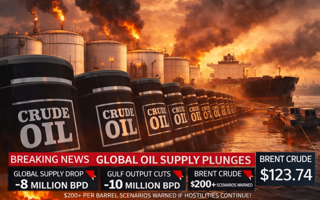
The LNG market was equally devastated. Approximately 81 million tonnes (110 bcm) of LNG had transited the Strait of Hormuz in 2025, accounting for nearly 20% of global LNG supply — primarily from Qatar. The halt of Qatari LNG exports caused natural gas prices to surge 50% year-on-year across Europe and Asia. European benchmark (TTF) futures for 2026 averaged 49% higher than the prior year, while Asian LNG forward contracts averaged 53% higher.
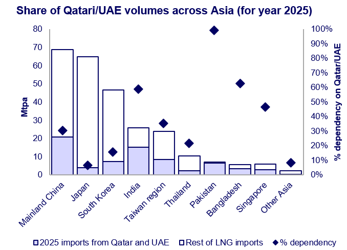
The geographic vulnerability was stark: in 2024, more than 84% of crude oil and 83% of LNG passing through the Strait were destined for Asian markets — including China, India, Japan, and South Korea. The closure of Hormuz thus became not only a Middle East oil shock but a wider Asian gas and power-security crisis, linking Gulf military escalation directly to Asian utility costs and industrial margins. The IEA characterized it as the "greatest global energy and food security challenge in history"
Critical Minerals: The Next Frontier of Energy Conflict
The "structural vulnerability" of the Western green transition lies in its massive dependence on China for the processing and refining of CRMs. China currently controls approximately 98% of the EU’s rare earth magnet requirements and 70% of the US’s processed rare earths. This concentration of supply allows Beijing to use minerals as a "geopolitical lever," much like Russia used natural gas.
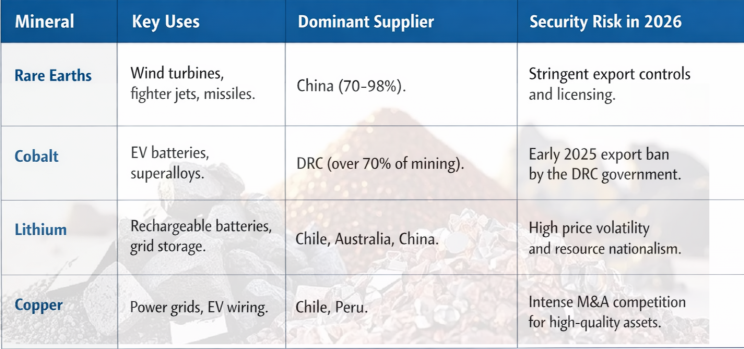
Recognizing this, the U.S. National Security Strategy (November 2025) designated critical mineral supply chains a matter of national security. In February 2026, the U.S. launched "Project Vault" — a Strategic Critical Minerals Reserve — to protect the domestic industrial base and defense sector from shortages. India, similarly, launched the National Critical Mineral Mission and acquired 15,703 hectares in Argentina for lithium mining, alongside partnerships in Australia and Chile.
India at the Crossroads: From Vulnerability to Strategy
India's experience encapsulates the dilemma facing large emerging economies in a world of energy-weaponized conflicts. The country imports approximately 88.6% of its crude oil and a large share of its LNG, with about 49% of its crude and 68% of its LNG sourced from Gulf nations. Much of this transits through the Strait of Hormuz — a chokepoint now in active military crisis.
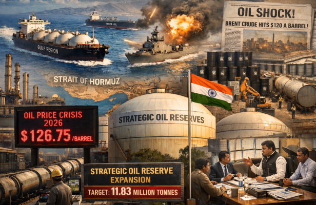
India's strategic petroleum reserves cover only 20–25 days of imports, compared to China's estimated 90–120 days. This vulnerability was exposed with force in early 2026 when Brent crude surged past $120/barrel, forcing emergency policy responses. India has since announced plans to expand its strategic crude capacity from 5.33 million tonnes to 11.83 million tonnes.
India's renewable energy story provides grounds for optimism. In 2025, India reached its target of 50% of installed electricity capacity from non-fossil fuel sources — five years ahead of its 2030 deadline. The SHANTI Act of 2025 opened the door to private nuclear investment, and the country is emerging as a major growth market for solar, wind, energy storage, and green hydrogen. Geopolitical pressure is, paradoxically, accelerating India's clean energy momentum — each megawatt of domestic generation reducing exposure to the volatile geopolitics of the Gulf.
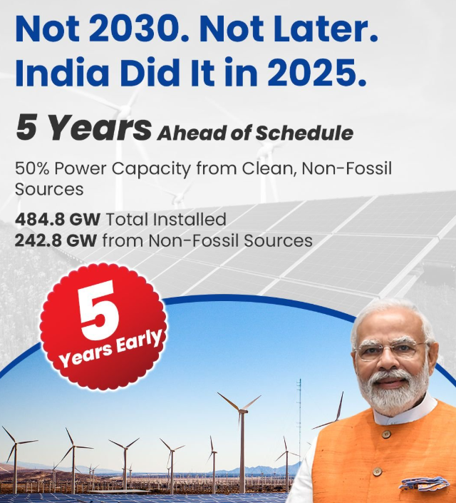
India is also repositioning itself geopolitically. At India Energy Week in early 2026, the country signaled a move toward a "multipolar energy landscape", using its scale as the world's third-largest energy consumer to negotiate simultaneously with producers, trading houses, and technology partners across the globe.
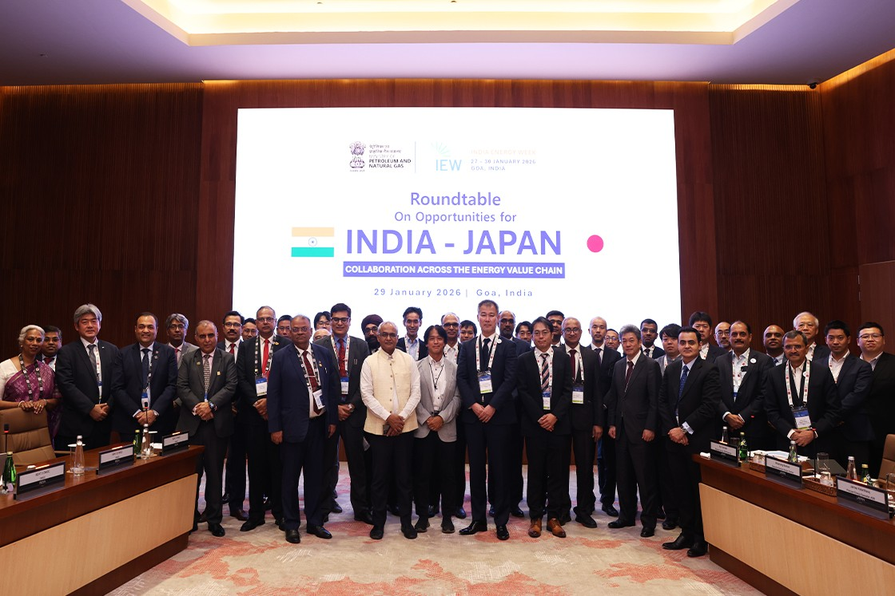
Macroeconomic Fallout: Stagflation and the End of the GCC Model
The 2026 US-Iran war has triggered what the IEA describes as a systemic collapse of the Gulf Cooperation Council (GCC) economic model. This model, predicated on the stable export of fossil fuels through the Strait of Hormuz, has been functionally dismantled by the regional war. By March 12, 2026, the combined oil production of Kuwait, Iraq, Saudi Arabia, and the UAE had dropped by at least 10 million barrels per day.
For the Global South, the conflict has been a double whammy. Elevated energy prices (surging past $120/bbl) have led to currency depreciation and widening current account deficits, particularly in import-dependent nations like India and Egypt. This has created an acute risk of stagflation—a period of high inflation combined with economic stagnation—that threatens to derail the development goals of the world's most populous countries.
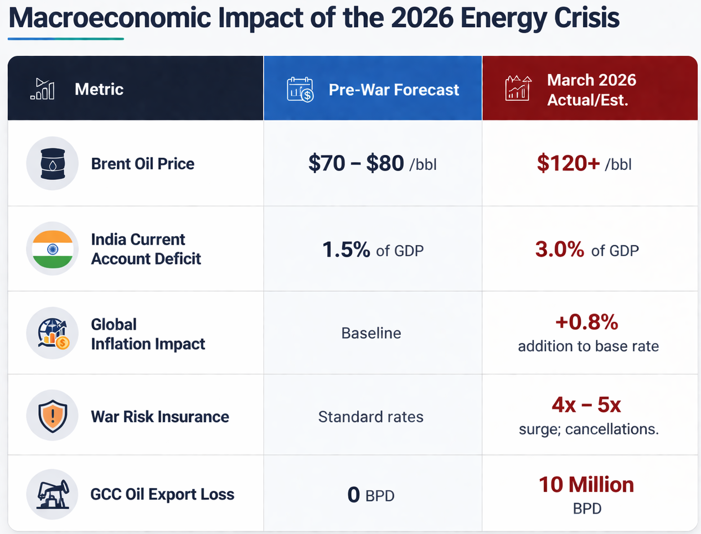
Technology as a Strategic Asset: AI, Nuclear, and Grid Resilience
Technological innovation is simultaneously the greatest driver of new energy demand and the most powerful tool for enhancing systemic resilience. In 2026, the focus of energy innovation has shifted toward competitiveness and security, with policies designed to ensure that the infrastructure of the future is protected from both cyber and kinetic threats.
The AI Surge: Power as the New Geopolitical Bottleneck
In 2026, energy security is being redefined not only by conflict but by the unprecedented electricity demand from the artificial intelligence revolution. Global data center power consumption is projected to reach 1,050 TWh by 2026—a 165% increase from 2020 levels. S&P Global Energy estimates that data center demand will grow by 17% in 2026 and 14% annually through 2030, eventually reaching 2,200 TWh, a figure equivalent to the total electricity consumption of India.
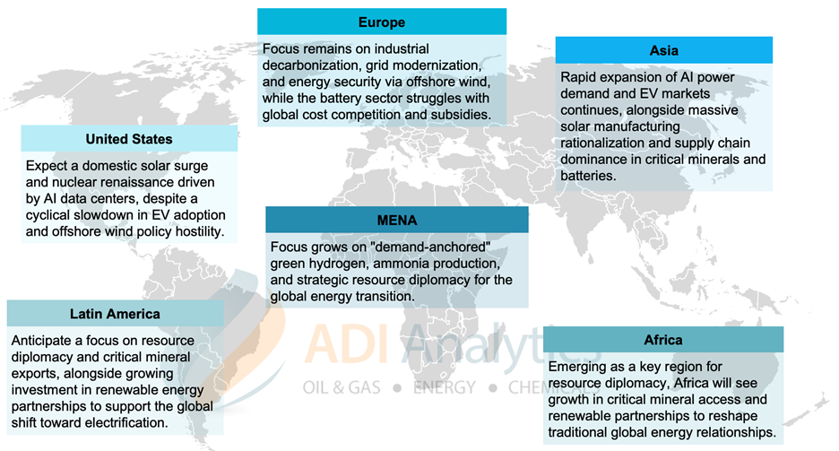
This surge in demand has turned power into the primary bottleneck for AI development, making energy access a critical enabler of geoeconomic competitiveness. High-growth economies and technology firms are now forced to adopt Bring Your Own Power (BYOP) strategies, bypassing traditional, congested grids to sign long-term deals for firm, zero-carbon power. The search for AI-ready power has led to a renewed focus on natural gas and, most significantly, a global nuclear renaissance.
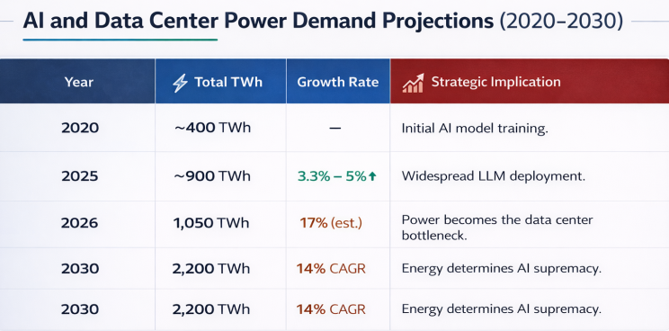
The Nuclear Renaissance and Small Modular Reactors (SMRs)
The 2026 conflict has provided the final push for a global nuclear renaissance, as nations realize that intermittent renewables alone cannot provide the firm energy required for an AI-supercharged economy in a volatile world. Nuclear reactors are increasingly viewed as the ultimate tool for energy sovereignty, capable of operating for up to 80 years with minimal reliance on external fuel supply chains once established.
The US has taken a leadership role in this shift, with the U.S. Nuclear Regulatory Commission evolving from a traditional safety umpire into an enabling partner that weighs the societal benefits of clean energy against safety risks. Under the mandate of the 2024 ADVANCE Act and the May 2025 Executive Order 14300, the industry is seeing a move toward smarter regulation designed to fast-track the deployment of new technologies.
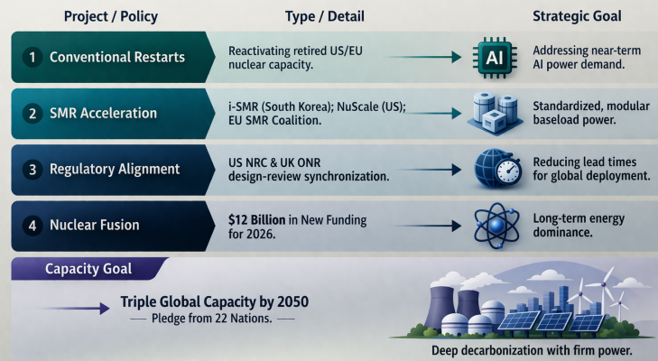
Grid Modernization and Distributed Resilience
The modernization of the electric grid is now viewed as an imperative for national security and economic competitiveness. In the United States, the Federal Energy Regulatory Commission (FERC) and NERC implemented several significant improvements in 2025, including new standards for generator performance during extreme cold weather and strengthened supply chain risk management to prevent cyber sabotage. Capital deployment for US grid expansion reached a record $115 billion in 2025.
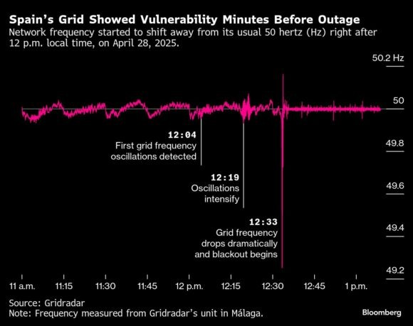
The shift toward a "decentralized, renewable-heavy" system introduces new risks. In April 2025, a voltage oscillation cascaded through Spain's aging power grid, plunging 56 million people into darkness for six hours at an economic cost of €1.6 billion. To mitigate these risks, the energy infrastructure of 2026 emphasizes "flexibility" and "digital visibility." This includes the deployment of advanced demand response, dynamic line ratings, and microgrids that integrate on-site generation with storage to harden resilience against market volatility and physical attacks.
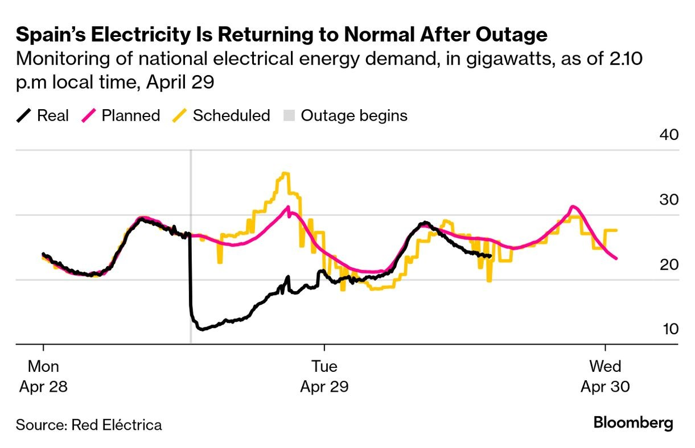
The Future: Resilience, Not Just Supply
The military conflicts of 2025 and 2026 have definitively redefined energy security as a core tenet of national sovereignty and digital survival. The era of the "global energy market" has been superseded by a fractured landscape of competing energy blocs, where the ability to protect critical infrastructure from kinetic and cyber threats is as important as the ability to produce the energy itself.
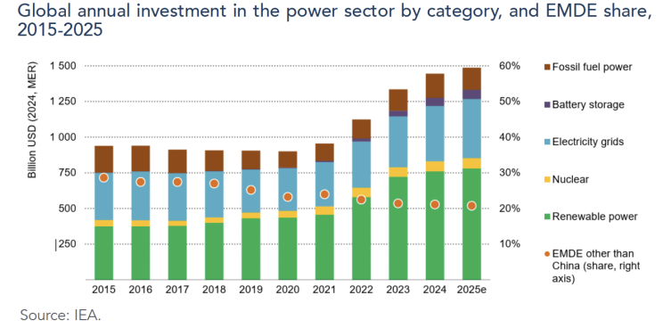
The US-Iran war has served as a brutal reminder that the "energy transition" cannot exist in a vacuum of geopolitical instability. In this new era, energy security is defined by:
- Infrastructure Resilience: The move from centralized, vulnerable grids to decentralized, modular systems that can absorb shocks and withstand targeted attacks.
- Technological Sovereignty: A race to dominate the supply chains for nuclear power, critical minerals, and battery storage, ensuring that the transition to clean energy does not create new, mercurial dependencies.
- Digital-Energy Convergence: The integration of energy planning with AI expansion, recognizing that the nation with the most reliable and abundant power will determine the future of technological supremacy.
- Strategic Multi-Polarity: The emergence of new corridors like IMEC and the shadow fleet networks, as nations move beyond a US-centric maritime security order to create their own paths to resource certainty.

As we move toward the late 2020s, the "race for resilience" will continue to be the defining force of the global economy. The lessons of the 2026 conflict are clear: energy is no longer a commodity to be optimized for price, but a strategic asset to be secured at any cost. In a hotter, more volatile world, prosperity will belong to those who can power their systems while successfully navigating the "Great Fragmentation."